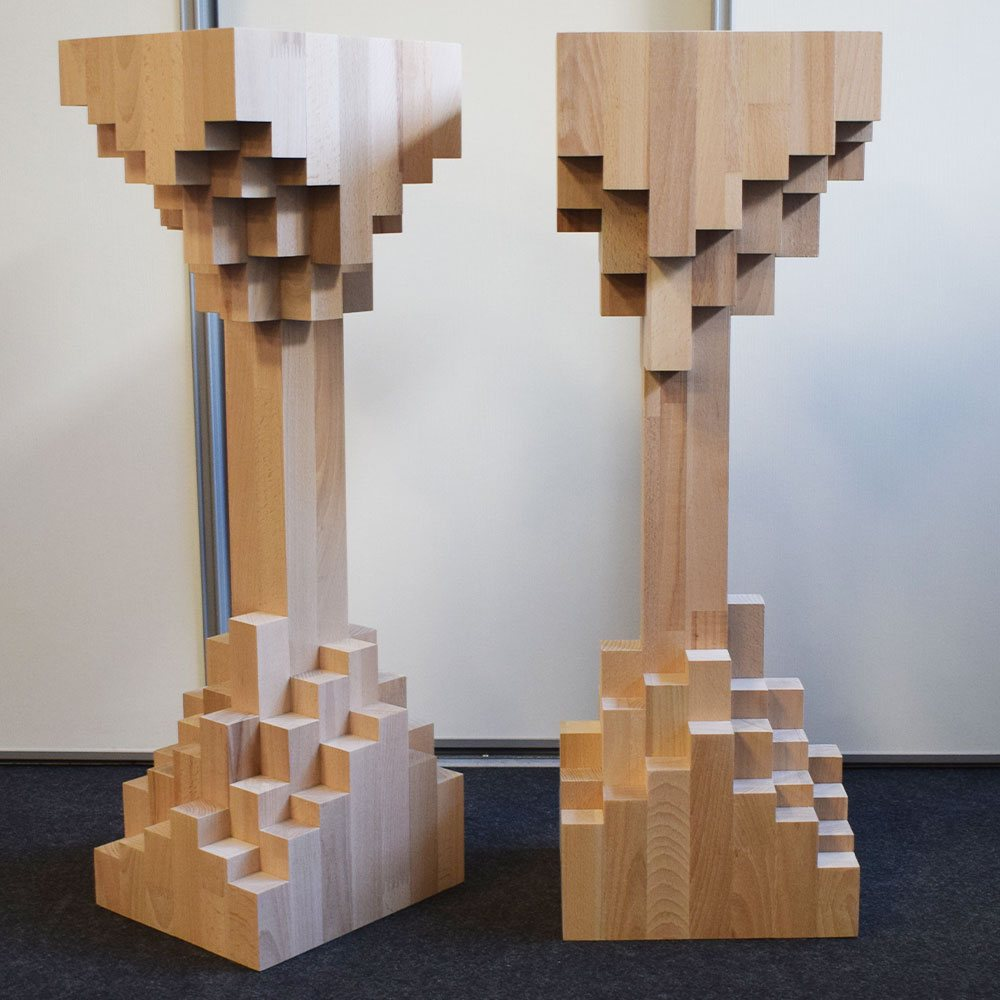
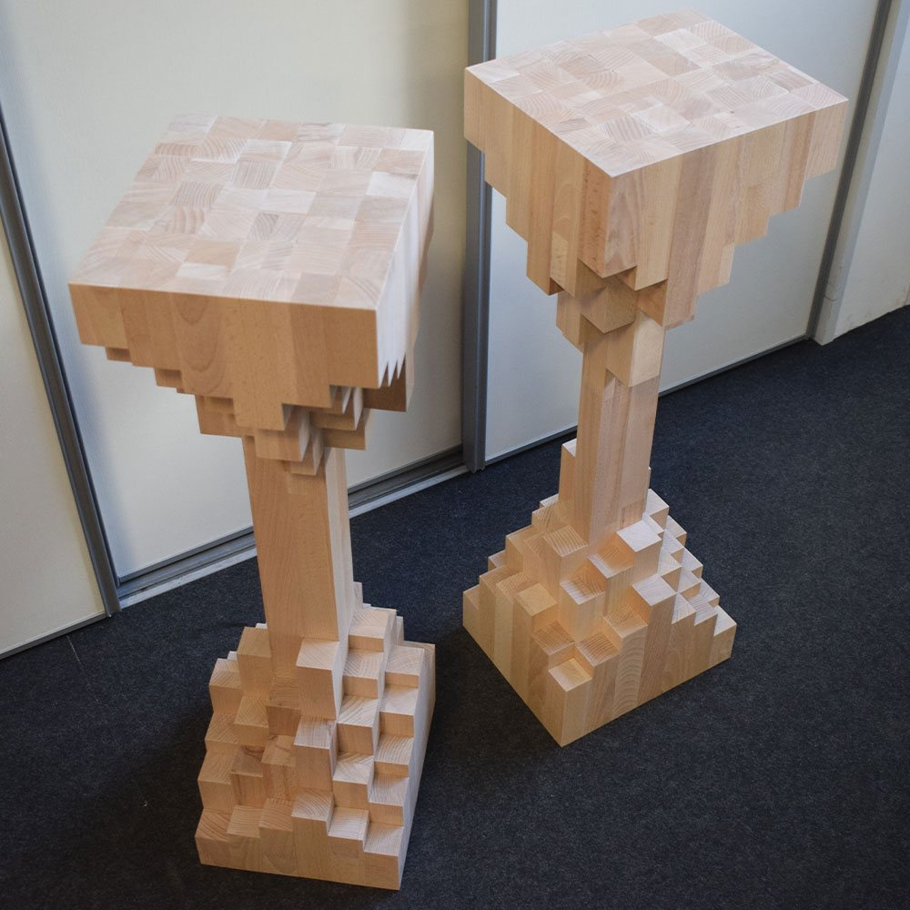
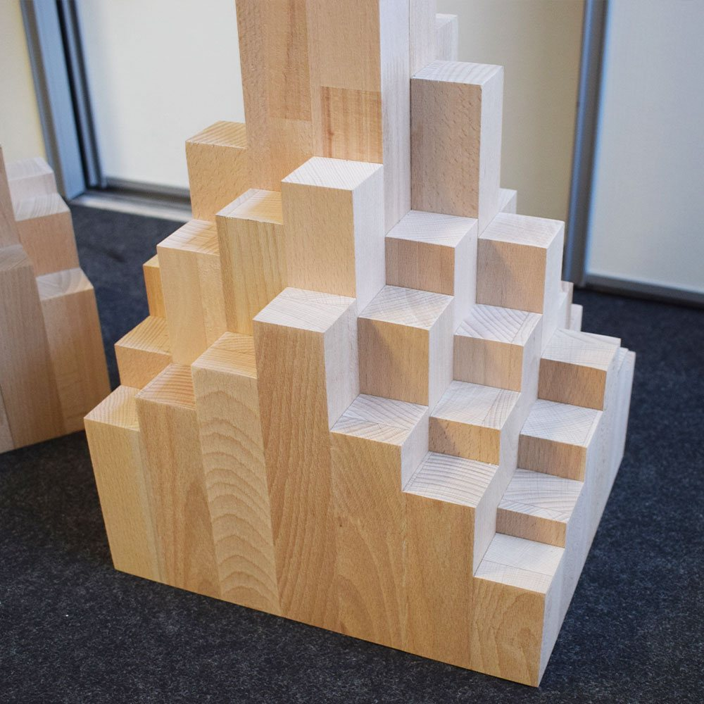

Extrasound Tree Stand per diffusori in Faggio massello
Stand per diffusori in Faggio massello dalla forma ad albero: una base a gradoni, un fusto sottile e un piano che si apre a scalini.
- Faggio massello
- 71,5 cm di altezza
- 8,3 kg ciascuno
Essenze su richiestaScopri le essenze
- Faggio
- Rovere
- Noce Canaletto
- Ciliegio
- Frassino
- Doussiè
- Wengè
350 € la coppiaprezzi su extrasound.it


Radici, fusto e chioma.
Come dice il nome, l'idea del Tree mi è venuta guardando la geometria di un albero. Prima di toccare il legno mi sono fatto uno schema: una base che fa da radici, un fusto al centro e, in alto, una chioma che regge il diffusore.
Ho tagliato tanti parallelepipedi di Faggio massello. Quelli della base hanno tutti la stessa misura e, sovrapposti a gradoni, danno stabilità allo stand. Quelli della chioma invece sono diversi tra loro e si aprono a scalini sotto il piano d'appoggio.
Il fusto, anche lui in Faggio, è il pezzo che tiene insieme tutto: ancora le radici e tiene fissati i blocchetti della chioma.
Di serie lo costruisco in Faggio, ma su richiesta posso usare tranquillamente qualsiasi altra essenza.
Lo trovi nel nostro showroom di Cesena. Fabrizio lo costruisce anche nuovo, sulle misure dei tuoi apparecchi e della tua casa.
Diffusori che ci stanno, per esempio: Argon Audio Forte A5, Rega Kyte e Piega Premium 301. Sono solo esempi tra quelli che trovi su Extrasound: va bene qualsiasi diffusore da scaffale con un ingombro simile.
Domande frequenti.
Si può avere in un altro legno?
Sì. Di serie è in Faggio massello, ma posso costruirlo in qualsiasi essenza: Rovere, Noce Canaletto, Ciliegio, Frassino o quella che preferisci.
È stabile?
Sì. La base è fatta di blocchetti tutti uguali sovrapposti a gradoni, larga e pesante: ogni stand pesa 8,3 kg.
Che diffusori ci stanno?
Il piano misura 20,5 × 24 cm e va bene anche se il diffusore sporge di 2-3 cm. Qui sopra trovi alcuni modelli compatibili.
Ha i piedini?
Di serie appoggia direttamente sul legno. Su richiesta aggiungo piedini o punte, anche su stand già pronti.
Si può fare di un'altra altezza?
Sì. Lo costruisco anche su misura, partendo dall'altezza del tuo punto d'ascolto e dai tuoi diffusori.